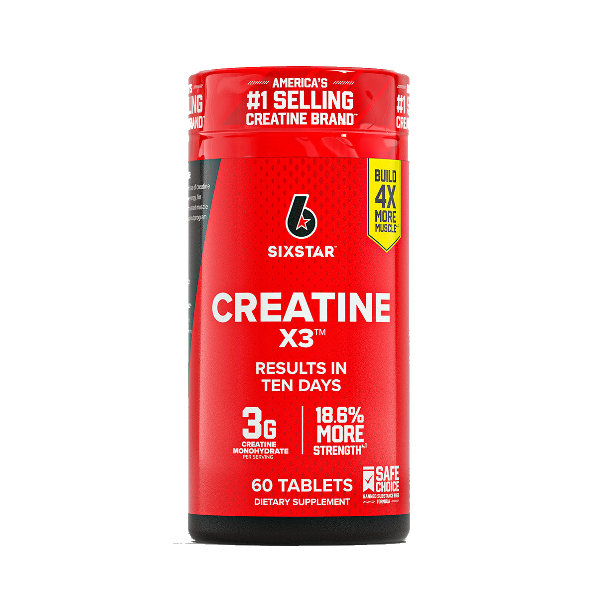

Product imagery supplied by the retailer. Packaging may vary — verify the Supplement Facts panel on the container you receive.
Six Star
Creatine X3
Our analysis — editorial take, not from the label
A caplet format dosing 3 g of creatine monohydrate per 3-caplet serving alongside a 169 mg proprietary amino blend whose individual ingredient amounts aren't broken out on the label.
- Creatine
- 3 g
- Form
- monohydrate
- Servings
- 20
Price tier: Budget · relative cost per full serving across this database
We don't list dollar prices — they change daily and go stale. Check the live price instead:
View current price Compare all creatine productsScoop Sense doesn't collect user reviews and won't invent them. Read customer reviews on Amazon
Affiliate links — Scoop Sense may earn a commission at no additional cost to you.
Sold as coated caplets — no mixing or flavor to manage.
Label verified: July 2026 · View label source
Label data
Per full serving · 20 servings per container · from the manufacturer's panel
| Creatine per serving | 3 g |
|---|---|
| Form | monohydrate |
| Creatine Monohydrate | 3 g |
| Amino Plus Blend (L-arginine, glycine, L-methionine, L-carnosine, alpha lipoic acid) | 169 mg |
| Proprietary blend | Yes |
Primary label source: Six Star — official product page · verified July 2026
Cautions
- Delivers 3 g of creatine per serving, below the 5 g dose used in most creatine research
- The Amino Plus Blend's individual ingredient amounts are not disclosed on the label
- Talk to your doctor if you have kidney conditions
Product details
Where this label sits
Six Star Creatine X3 is one of the creatine products in the Scoop Sense database. The label uses at least one proprietary blend, so a blend total stands in place of the individual amounts inside it. It runs 20 servings per container at the full labeled serving. Everything on this page comes from the manufacturer's supplement facts panel as of July 2026 — never from the marketing page.
Key ingredients & studied doses
- Creatine Monohydrate · 3 g. Studied for supporting ATP energy recycling and strength/power output during short, high-intensity effort; this label's dose sits below the 5 g typically used in that research.
- Amino Plus Blend (L-arginine, glycine, L-methionine, L-carnosine, alpha lipoic acid) · 169 mg. A combined-weight blend of five amino-acid-related compounds; the label discloses the total but not how much of each ingredient it contains.
Flavors & sweetener
Sold as coated caplets — no mixing or flavor to manage.
Who it's best for
Anyone who wants the form with the deepest research base — most creatine studies use 3–5 g of monohydrate daily. Skip it if you want every individual dose disclosed on the label. Derived from the label figures above — not medical advice.
How we log this label
Every entry is built the same way: we read the current supplement facts panel, log each disclosed dose, compare it against the amounts used in published research, flag proprietary blends, and state the cautions plainly. The full methodology explains each step.
This label against the research
How we evaluate labelsEach bar shows the amount commonly used in published human research, and where this label's dose falls against it. Research amounts are context, not a recommendation — they are not doses, and nothing here is medical advice.
-
Creatine3 g
At or above the studied amount0studied range 3 g–5 g6 g
Maintenance dosing in the research is 3–5 g a day of monohydrate, every day, not only on training days.
-
L-arginine0.17 g
Plain L-arginine is poorly absorbed as an oral pump ingredient; citrulline raises blood arginine more reliably, which is why the research moved to it.
One or more amounts on this label sit inside a proprietary blend, so the individual doses behind the blend total cannot be compared at all.
Common questions about Six Star Creatine X3
Do I need a loading phase with Six Star Creatine X3?
Loading is optional. Research shows a steady 3 g daily serving of creatine reaches muscle saturation in about three to four weeks; a loading week of around 20 g per day just gets there faster. This label is creatine monohydrate, the form used in most of that research.
What does the proprietary blend in Six Star Creatine X3 hide?
The Amino Plus Blend (L-arginine, glycine, L-methionine, L-carnosine, alpha lipoic acid) lists 169 mg as a combined total. A blend total tells you the sum of its ingredients, not the individual doses inside it — which is why blend entries can't be checked against studied amounts.